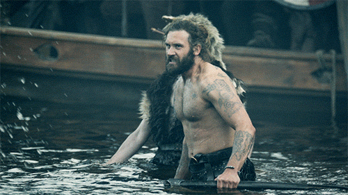
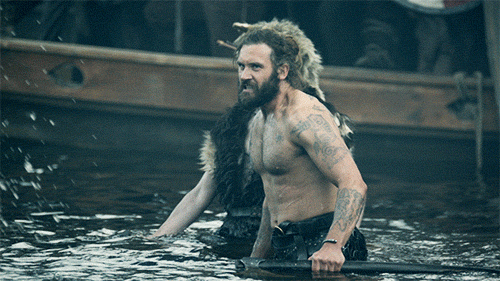

Главные герои
 



Рагнар
Рагна́р Лодбро́к (др.-сканд. Ragnarr Loðbrók) - полулегендарный скандинавский конунг из рода Инглингов, ключевой персонаж сериала.
Умелый воин и амбициозный вождь, Рагнар на протяжении почти всей своей жизни следует пути викинга. Рассекая море в поисках боевой славы и наживы, он стремится обрести новые знания, открыть неизвестные земли и изменить нелегкую судьбу своего народа, живущего в суровых условиях Скандинавского полуострова
Флóки
Флóки (др.-сканд. Flóki) - скандинавский кораблестроитель, активно участвующий в грабительских набегах викингов на страны Европы. Близкий друг и соратник Рагнара Лодброка. Эксцентричный и чудаковатый, он живет в уединенном доме в лесу, работая в своей мастерской на берегу моря.
В ходе развития сюжета Флоки инициирует или оказывается вовлечен во множество интриг, связанных с домом Лодброка. Отстранившись от войн и политики, он открывает остров, позже получивший название Исландия и ставший важной скандинавской колонией, а в дальнейшем - независимым государством.
Лаге́рта
Лаге́рта - известная скандинавская воительница, упомянутая в хрониках Саксона Грамматика, первая жена датского морского конунга Рагнара Лодброка. В сериале Лагерта активно участвует в походах викингов, колонизации ими новых земель и междоусобных распрях скандинавских вождей.
Эта отважная и независимая женщина способна проявлять железную решимость, когда дело касается ее личного достоинства, семьи или власти. Лагерта также известна своим милосердием и благородством.
Ро́лло
Ро́лло - известный вождь викингов, первый герцог Нормандский, основатель Нормандской династии. В сериале - старший брат Рагнара Лодброка. Знаменитый своей силой, бесстрашием и диким, импульсивным нравом, он активно участвует в разорительных набегах викингов на страны Европы.
Безуспешные попытки возвыситься на фоне влиятельного и удачливого брата приводят Ролло к ожесточенной внутренней борьбе, которая делает его несчастным и вынуждает искать пути выхода из кризиса. В конечном счете Ролло отворачивается от своего народа, принимает христианство и переходит на сторону Западно-Франкского государства, заняв высокое положение при дворе императора Карла.
Бьёрн
Бьёрн Железнобо́кий - полулегендарный скандинавский конунг, основатель шведской королевской династии Мунсё. В сериале - сын Рагнара Лодброка и Лагерты, брат Гиды, единокровный брат Уббе, Хвитсерка, Сигурда и Ивара.
Сильный и решительный человек, Бьёрн намерен стать великим воином, лидером и первооткрывателем. Он полностью разделяет жажду своего отца к приключениям и поддерживает его, регулярно участвуя в грабительских набегах викингов. Необыкновенная стойкость и выносливость в бою побуждают отца дать Бьёрну прозвище «Железнобокий», под которым он и входит в историю.
И́вар Беско́стный
И́вар Беско́стный - полулегендарный вождь датских викингов, известный неистовством в бою. В сериале - четвертый сын Рагнара Лодброка и Аслауг, получивший свое прозвище из-за нарушенного остеогенеза.
Самый агрессивный и неуравновешенный среди своих братьев - Уббе, Хвитсерка и Сигурда Змееглазого. Многие годы Ивар не может ходить и передвигается либо с посторонней помощью, либо ползком. В период завоевания Англии Великой датской армией ему удается подняться на ноги, оковав их железом.
У́ббе
У́ббе - полулегендарный конунг данов, один из предводителей Великой языческой армии, длительное время опустошавшей Англию. В сериале - первенец Рагнара Лодброка и Аслауг, брат Хвитсерка, Сигурда Змееглазого и Ивара Бескостного. Единокровный брат Бьёрна Железнобокого
Уббе - участник вторжения в Англию Великой датской армии, стремящейся отомстить за смерть Рагнара Лодброка. В ходе конфликта Каттегата с Вестфольдом он занимает сторону Лагерты и противостоит войскам конунга Харальда Прекрасноволосого.
Хви́тсерк
Хви́тсерк - полулегендарный скандинавский конунг, правивший, согласно средневековым авторам, на территории нынешней Швеции и, вероятно, на Руси (Гардарики). В сериале - второй сын Рагнара Лодброка и Аслауг, брат Уббе, Сигурда Змееглазого и Ивара Бескостного. Единокровный брат Бьёрна Железнобокого.
Участник плаваний Бьёрна Железнобокого и вторжения в Англию Великой датской армии. В ходе междоусобных войн скандинавских вождей Хвитсерк вместе с Иваром сражается против Бьёрна, Уббе и Лагерты, но когда его брат превращается в кровавого деспота, меняет сторону и оказывается в лагере победителей.